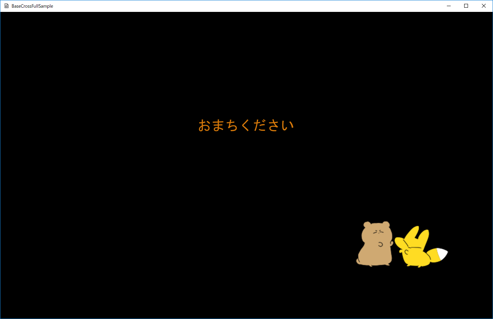

図1304a
少し経つと、以下の画面になります。
図1304b
ここでBボタンを押すと、ゲーム画面になります。
図1304c
ゲーム画面でBボタンを押すと前の画面に戻ります。
class WaitStage : public Stage {
//ビューの作成
void CreateViewLight();
//スプライトの作成
void CreateTitleSprite();
//リソースロード用のスレッド（スタティック関数）
static void LoadResourceFunc();
//リソースを読み込んだことを知らせるフラグ（スタティック変数）
static bool m_Loaded;
//ミューテックス
static std::mutex mtx;
public:
//構築と破棄
WaitStage() :Stage() {}
virtual ~WaitStage() {}
//初期化
virtual void OnCreate()override;
//更新
virtual void OnUpdate()override;
};
リソースロード用のスレッド関数 リソースが読み込み終わったことを知らせるフラグ ミューテックス
void WaitStage::OnCreate() {
wstring DataDir;
//サンプルのためアセットディレクトリを取得
App::GetApp()->GetAssetsDirectory(DataDir);
//お待ちくださいのテクスチャのみここで登録
wstring strTexture = DataDir + L"wait.png";
App::GetApp()->RegisterTexture(L"WAIT_TX", strTexture);
strTexture = DataDir + L"movetest.png";
App::GetApp()->RegisterTexture(L"MOVETEST_TX", strTexture);
//他のリソースを読み込むスレッドのスタート
std::thread LoadThread(LoadResourceFunc);
//終了までは待たない
LoadThread.detach();
CreateViewLight();
//スプライトの作成
CreateTitleSprite();
}
//他のリソースを読み込むスレッドのスタート
std::thread LoadThread(LoadResourceFunc);
//終了までは待たない
LoadThread.detach();
bool WaitStage::m_Loaded = false;
std::mutex WaitStage::mtx;
void WaitStage::LoadResourceFunc() {
mtx.lock();
m_Loaded = false;
mtx.unlock();
wstring DataDir;
//サンプルのためアセットディレクトリを取得
App::GetApp()->GetAssetsDirectory(DataDir);
//各ゲームは以下のようにデータディレクトリを取得すべき
//App::GetApp()->GetDataDirectory(DataDir);
wstring strTexture = DataDir + L"sky.jpg";
App::GetApp()->RegisterTexture(L"SKY_TX", strTexture);
strTexture = DataDir + L"trace.png";
App::GetApp()->RegisterTexture(L"TRACE_TX", strTexture);
strTexture = DataDir + L"number.png";
App::GetApp()->RegisterTexture(L"NUMBER_TX", strTexture);
strTexture = DataDir + L"spark.png";
App::GetApp()->RegisterTexture(L"SPARK_TX", strTexture);
strTexture = DataDir + L"fire.png";
App::GetApp()->RegisterTexture(L"FIRE_TX", strTexture);
strTexture = DataDir + L"StageMessage.png";
App::GetApp()->RegisterTexture(L"MESSAGE_TX", strTexture);
//サウンド
wstring CursorWav = DataDir + L"cursor.wav";
App::GetApp()->RegisterWav(L"cursor", CursorWav);
//BGM
wstring strMusic = DataDir + L"nanika .wav";
App::GetApp()->RegisterWav(L"Nanika", strMusic);
mtx.lock();
m_Loaded = true;
mtx.unlock();
}
void WaitStage::OnUpdate() {
if (m_Loaded) {
//リソースのロードが終了したらタイトルステージに移行
PostEvent(0.0f, GetThis<ObjectInterface>(), App::GetApp()->GetScene<Scene>(), L"ToTitleStage");
}
}
App::GetApp()->UnRegisterResource(L"リソース名")
void AnimeSprite::OnCreate() {
float HelfSize = 0.5f;
//頂点配列
vector<VertexPositionColorTexture> vertex = {
{ VertexPositionColorTexture(Vec3(-HelfSize, HelfSize, 0),Col4(1.0f,1.0f,1.0f,1.0f), Vec2(0.0f, 0.0f)) },
{ VertexPositionColorTexture(Vec3(HelfSize, HelfSize, 0), Col4(1.0f, 1.0f, 1.0f, 1.0f), Vec2(1.0f, 0.0f)) },
{ VertexPositionColorTexture(Vec3(-HelfSize, -HelfSize, 0), Col4(1.0f, 1.0f, 1.0f, 1.0f), Vec2(0.0f, 1.0f)) },
{ VertexPositionColorTexture(Vec3(HelfSize, -HelfSize, 0), Col4(1.0f, 1.0f, 1.0f, 1.0f), Vec2(1.0f, 1.0f)) },
};
//インデックス配列
vector<uint16_t> indices = { 0, 1, 2, 1, 3, 2 };
SetAlphaActive(m_Trace);
auto PtrTransform = GetComponent<Transform>();
PtrTransform->SetScale(m_StartScale.x, m_StartScale.y, 1.0f);
PtrTransform->SetRotation(0, 0, 0);
PtrTransform->SetPosition(m_StartPos.x, m_StartPos.y, 0.0f);
//頂点とインデックスを指定してスプライト作成
auto PtrDraw = AddComponent<PCTSpriteDraw>(vertex, indices);
PtrDraw->SetSamplerState(SamplerState::LinearWrap);
PtrDraw->SetTextureResource(m_TextureKey);
}
void AnimeSprite::OnUpdate() {
float ElapsedTime = App::GetApp()->GetElapsedTime();
m_TotalTime += ElapsedTime * 5.0f;
if (m_TotalTime >= XM_2PI) {
m_TotalTime = 0;
}
auto PtrDraw = GetComponent<PCTSpriteDraw>();
Col4 col(1.0, 1.0, 1.0, 1.0);
col.w = sin(m_TotalTime) * 0.5f + 0.5f;
PtrDraw->SetDiffuse(col);
}
図1304d
このテクスチャを3×2に分割し、それを順番に表示すると連番アニメーションが出来上がります。
void SerialAnimeSprite::OnUpdate() {
float ElapsedTime = App::GetApp()->GetElapsedTime();
m_TotalTime += ElapsedTime;
if (m_TotalTime >= m_AnimeTime) {
m_PieceIndex++;
if (m_PieceIndex >= m_PieceXCount * m_PieceYCount) {
m_PieceIndex = 0;
}
m_TotalTime = 0;
}
vector<VertexPositionColorTexture> newVertices;
uint32_t pieceX = m_PieceIndex % m_PieceXCount;
uint32_t pieceY = m_PieceIndex / m_PieceXCount;
float pieceWidth = 1.0f / (float)m_PieceXCount;
float pieceHeight = 1.0f / (float)m_PieceYCount;
float pieceStartX = (float)pieceX * pieceWidth;
float pieceEndX = pieceStartX + pieceWidth;
float pieceStartY = (float)pieceY * pieceHeight;
float pieceEndY = pieceStartY + pieceHeight;
for (size_t i = 0; i < m_BackupVertices.size(); i++) {
Vec2 uv = m_BackupVertices[i].textureCoordinate;
switch (i) {
case 0:
uv.x = pieceStartX;
uv.y = pieceStartY;
break;
case 1:
uv.x = pieceEndX;
uv.y = pieceStartY;
break;
case 2:
uv.x = pieceStartX;
uv.y = pieceEndY;
break;
case 3:
uv.x = pieceEndX;
uv.y = pieceEndY;
break;
}
auto v = VertexPositionColorTexture(
m_BackupVertices[i].position,
m_BackupVertices[i].color,
uv
);
newVertices.push_back(v);
}
auto ptrDraw = GetComponent<PCTSpriteDraw>();
ptrDraw->UpdateVertices(newVertices);
}
uint32_t pieceX = m_PieceIndex % m_PieceXCount; //Xの位置
uint32_t pieceY = m_PieceIndex / m_PieceXCount; //Yの位置
//初期化
void MultiFire::OnCreate() {
//加算描画処理をする
SetAddType(true);
}
void MultiFire::InsertFire(const Vec3& Pos) {
auto ptrParticle = InsertParticle(4);
ptrParticle->SetEmitterPos(Pos);
ptrParticle->SetTextureResource(L"FIRE_TX");
ptrParticle->SetMaxTime(0.5f);
for (auto& rParticleSprite : ptrParticle->GetParticleSpriteVec()) {
rParticleSprite.m_LocalPos.x = Util::RandZeroToOne() * 0.1f - 0.05f;
rParticleSprite.m_LocalPos.y = Util::RandZeroToOne() * 0.1f;
rParticleSprite.m_LocalPos.z = Util::RandZeroToOne() * 0.1f - 0.05f;
//各パーティクルの移動速度を指定
rParticleSprite.m_Velocity = Vec3(
rParticleSprite.m_LocalPos.x * 5.0f,
rParticleSprite.m_LocalPos.y * 5.0f,
rParticleSprite.m_LocalPos.z * 5.0f
);
//色の指定
rParticleSprite.m_Color = Col4(1.0f, 1.0f, 1.0f, 1.0f);
}
}
auto ptrParticle = InsertParticle(4);
ptrParticle->SetEmitterPos(Pos);
ptrParticle->SetTextureResource(L"FIRE_TX");
ptrParticle->SetMaxTime(0.5f);
for (auto& rParticleSprite : ptrParticle->GetParticleSpriteVec()) {
rParticleSprite.m_LocalPos.x = Util::RandZeroToOne() * 0.1f - 0.05f;
rParticleSprite.m_LocalPos.y = Util::RandZeroToOne() * 0.1f;
rParticleSprite.m_LocalPos.z = Util::RandZeroToOne() * 0.1f - 0.05f;
//各パーティクルの移動速度を指定
rParticleSprite.m_Velocity = Vec3(
rParticleSprite.m_LocalPos.x * 5.0f,
rParticleSprite.m_LocalPos.y * 5.0f,
rParticleSprite.m_LocalPos.z * 5.0f
);
//色の指定
rParticleSprite.m_Color = Col4(1.0f, 1.0f, 1.0f, 1.0f);
}
//炎の作成
void GameStage::CreateFire() {
auto MultiFirePtr = AddGameObject<MultiFire>();
//共有オブジェクトに炎を登録
SetSharedGameObject(L"MultiFire", MultiFirePtr);
}
void SeekObject::OnCollisionEnter(shared_ptr<GameObject>& Other) {
//ファイアの放出
auto ptriFire = GetStage()->GetSharedGameObject<MultiFire>(L"MultiFire", false);
if (ptriFire) {
ptriFire->InsertFire(GetComponent<Transform>()->GetPosition());
}
}
void MultiSpark::OnUpdate() {
for (auto ptrParticle : GetParticleVec()) {
for (auto& rParticleSprite : ptrParticle->GetParticleSpriteVec()) {
if (rParticleSprite.m_Active) {
rParticleSprite.m_Color.z += 0.05f;
if (rParticleSprite.m_Color.z >= 1.0f) {
rParticleSprite.m_Color.z = 1.0f;
}
}
}
}
//親クラスのOnUpdate()を呼ぶ
MultiParticle::OnUpdate();
}
//親クラスのOnUpdate()を呼ぶ
MultiParticle::OnUpdate();
void WaitStage::LoadResourceFunc() {
wstring dataDir;
//サンプルのためアセットディレクトリを取得
App::GetApp()->GetAssetsDirectory(dataDir);
//中略
//以下オーディオ
//サウンド
wstring CursorWav = dataDir + L"cursor.wav";
App::GetApp()->RegisterWav(L"cursor", CursorWav);
//ミュージック
wstring strMusic = dataDir + L"nanika .wav";
App::GetApp()->RegisterWav(L"Nanika", strMusic);
}
void GameStage::PlayBGM() {
auto XAPtr = App::GetApp()->GetXAudio2Manager();
m_BGM = XAPtr->Start(L"Nanika", XAUDIO2_LOOP_INFINITE, 0.1f);
}
void GameStage::OnDestroy() {
//BGMのストップ
auto XAPtr = App::GetApp()->GetXAudio2Manager();
XAPtr->Stop(m_BGM);
}
//Aボタン
void Player::OnPushA() {
auto grav = GetComponent<Gravity>();
grav->StartJump(Vec3(0,4.0f,0));
//スパークの放出
auto PtrSpark = GetStage()->GetSharedGameObject<MultiSpark>(L"MultiSpark", false);
if (PtrSpark) {
PtrSpark->InsertSpark(GetComponent<Transform>()->GetPosition());
}
//サウンドの再生
auto ptrXA = App::GetApp()->GetXAudio2Manager();
ptrXA->Start(L"cursor", 0, 0.5f);
}